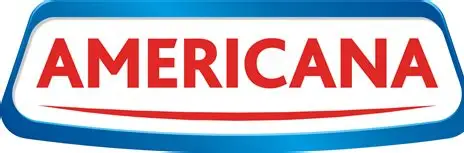

Organizations I've Worked With


Operations Leader with 8+ years of experience across Production Support, Incident Management, Platform Operations, Service Governance and Operational Excellence. Supporting business-critical restaurant delivery platforms processing 1.5M+ monthly orders across 9 countries while driving operational reliability, stakeholder alignment, automation and AI-enabled productivity. Experienced in leading incident response, operational governance, executive reporting, peak-event readiness and cross-functional coordination across Engineering, Product, Infrastructure, Security and Business teams.
Download Resume LinkedInMonthly Orders Supported
Peak Day Orders Managed
Countries Supported
Member Operations Team Led
Years Experience
Global Organizations
Country Operations
Enabled Workflows
Demonstrated operational leadership across large-scale platform operations, peak-event management, incident governance and AI-enabled productivity initiatives.
Supported multi-market restaurant delivery operations across GCC and international markets through platform operations, production support and service governance.
Successfully supported record-breaking Eid operations through war-room governance, hourly KPI reviews, infrastructure readiness and stakeholder alignment.
Managed shift planning, workload balancing, operational governance, service continuity and support performance management.
Reviewed and coordinated root cause investigations covering outages, assignment failures, synchronization issues and business-critical incidents.
Supported recovery and reconciliation activities during major operational disruptions while maintaining data integrity and business continuity.
Designed AI-assisted frameworks for technician audits, ticket analysis, operational reviews, executive reporting and productivity improvement initiatives.
Combining operations leadership, governance, reliability and AI-enabled productivity.
Driving coordinated incident response and stakeholder communication.
Ensuring operational continuity for business critical platforms.
Using AI for RCA generation, reporting, documentation and analysis.
SLA management, reporting, process improvement and operational oversight.
Led, coached and developed support engineers through performance reviews, workload management, knowledge sharing and operational governance.
Managed support operations across multiple shifts while ensuring service continuity during business-critical periods and peak events.
Coordinated critical incident response, stakeholder communication, escalation management and recovery activities.
Collaborated with Product, Engineering, Infrastructure, DBA, QA, Security and Business teams to support operational excellence.

Technical Support Lead
2025 - Present
Leading platform operations, major incident management, operational governance, SLA reviews, executive reporting and AI-enabled operational improvements across multi-country business operations.
SME → Compliance Auditor → Team Lead
2018 - 2025
Progressed through multiple leadership and governance roles, managing operational quality, compliance reviews, performance oversight and team leadership responsibilities.
Technical Support Associate
2017 - 2018
Started professional career in technical support, developing strong foundations in customer service, troubleshooting and operational support.
Designed a governance framework to evaluate technician adherence, identify recurring operational gaps and improve visibility for leadership teams.
Standardized SLA, KPI and operational reporting to improve decision-making and stakeholder visibility.
Implemented AI-powered workflows for RCA creation, MOM generation and executive communication.
RCA, Reporting, Executive Communication
Analysis, Documentation, Reviews
Research, Validation and Discovery
Knowledge Management and Learning
Email: tapas.das222@gmail.com
GitHub: github.com/tapasds
LinkedIn: linkedin.com/in/tapas-das-a58693a2